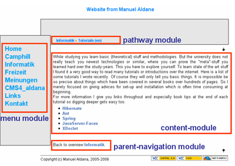

This folder is the heart of CMS4_aldana.
Now you get the explanation what the files (PHP scripts) are good for. Of course I cannot give you complete information for them. It is just a rough overview. To dig in deeper just have a look at these files (remember: CMS4_aldana is Open Source).
Mainly you can categorize the scripts into 4 parts:
- Link access
- Site modules
- Template interface
- Helper scripts
Proceed reading to get more detailed information what they are good for:
Link access
Link processors provide a way that make it easier to use hyperlinks and links to images in your main content as described in the ingredient chapter.
Of course you can write your <a> and <img> tags yourself but you can be sure it is much easier using provided functions instead. They too are internally used by other php scripts.
Hyperlink access
It is done by hyperlink_access.php5 script. If I need to include a hyperlink in my main content I use its provided functions. Just open this file with an editor and then you will see how to call functions. Hyperlinks are divided into two bits: external links, which point to a different website (=domain) or internal links which link to a different page of your site. External links open a new browser window whereas internal ones don’t.
When you include a link to a convenient file (you provided in /files folder) you have to pass the function the file path above folder /files.
Image access
As mentioned your images reside in the /images folder. The best way to include images is by using functions provided in image_access.php5. This way you can include image footnotes very easily too. When using functions you include the image path above /images folder.
Site modules
Modules provide things you see on your site. These modules you call directly from your template. Here you see what they look like:

Filter
The filter module (mod_param_checker.php5) itself is not visible on your site, though it is called by the template. If a site which does not exist is requested the filter module redirects to your home site. Imagine this being the cook who gets an order for a dish which is not on the menu card and therefore tells the waitress to present you the start site.
Header
Header module (mod_header.php5) processes the <head> part of the html site. It sets the encoding type and the title you see in the title bar of your browser.
Pathway
Pathway module (mod_pathway.php5) shows you the content path of the current displayed site. It maps from organized content paths in cms_config.xml.
This module is using an icon which represents a yellow array and makes the pathway looking nicer. So watch out that this image (arrow.png) is included in /images/icons folder. It is included in the download bundle already. If you want to change you have to adjust mod_pathway.php5.
Menu
Menu module (mod_menu.php5) shows you the menu items you set in cms_config.xml.
Content
Content module (mod_content.php5) loads the main content of the current page. It looks up the content folder (remember the ingredients) and chooses the requested content file. If a content is a category links are displayed which point to the belonging children contents.
Navigation
Navigation module mod_navigation.php5 makes it easier to go back to the parent category. This way it is convenient for the user to know where to proceed to read.
Template interface
As you know the site modules are all included in your template. Of course there must be a way to connect to these modules. Site modules are encapsulated through an interface (cms_interface.php5), each module is called by the approriate function
declared by the interface. The implementation of this interface is cms_aldana.php5.
Helper scripts
Configuration access
Access to CMS4_aldana configuration file is encapsulated through xml_config_access.php5. For you as a content writer it should not be of interest. It is used by other php-scripts.
Path builder
Links are mapped to concrete paths which point to content parts (ingredients) you wrote. Links and their counterpart paths are built up and managed through link_path.php5.
Asserts
This little set of functions in asserts.php5 is for programming convenience. Assertions makes programming life often easier :).